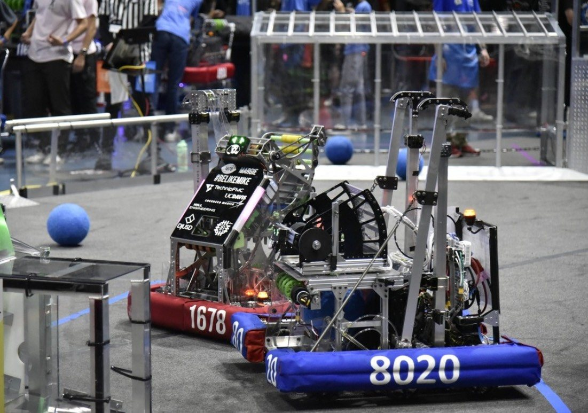
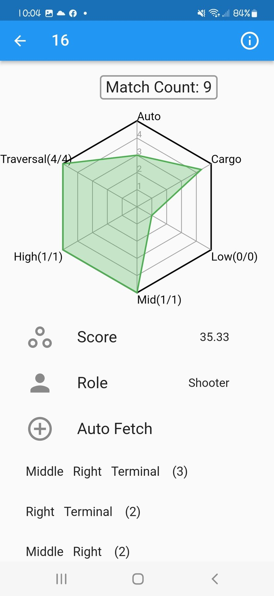
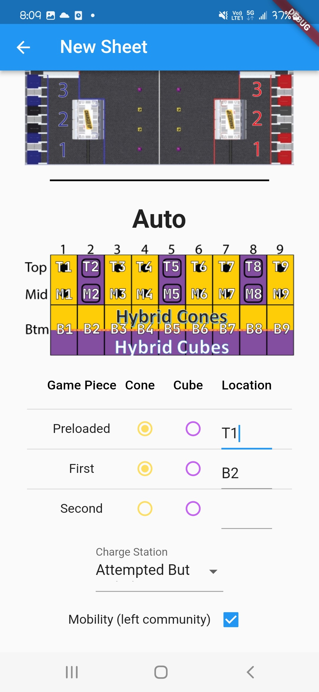
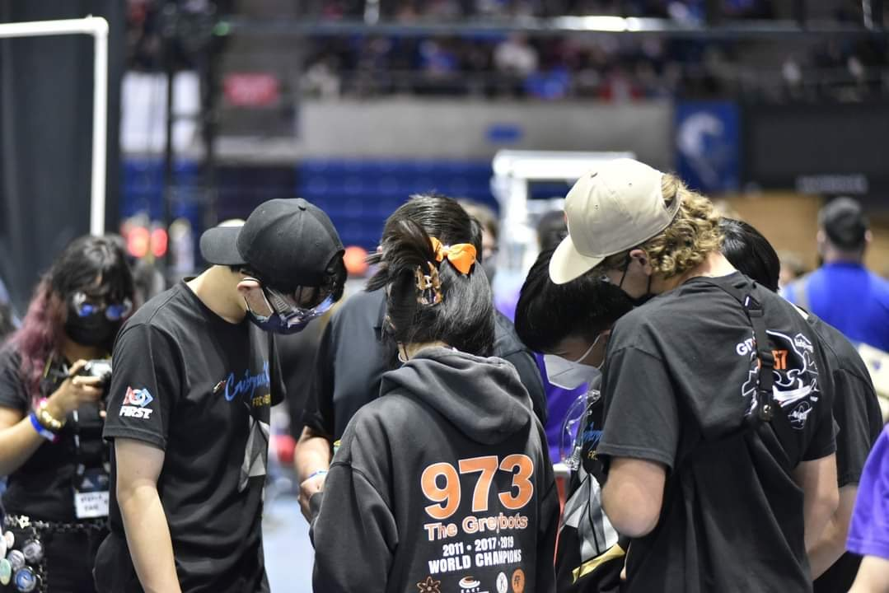
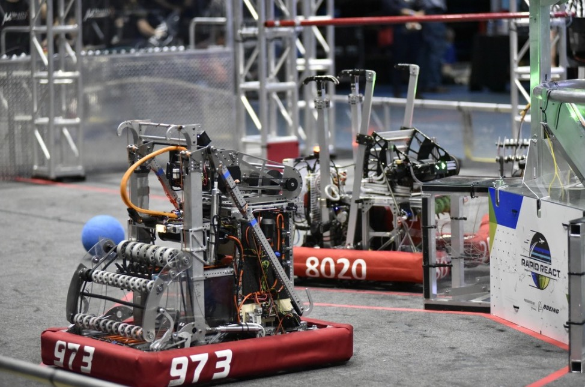

Case Study | Competition Robotics Leadership
FIRST Robotics Competition
Led programming, strategy, and scouting while connecting robot behavior to live competition decisions.
Learned robotics as a complete competition system.
FRC taught me that software cannot be separated from robot behavior, driver needs, mechanism limits, repair speed, and match strategy. My work expanded from programming into strategy and scouting because good decisions required understanding the full system and communicating clearly under event pressure.
Even when my formal role was software-focused, I joined build-season prototyping and mechanism discussions so the programs matched the real robot.

Turned match pressure into usable strategy data.
I led scouting work and supported tools for live match data collection. I also built Excel-based analysis workflows so the team could compare robots, support alliance selection, and make strategy decisions with evidence.
Autonomous logic
Prepared autonomous-period actions and selected teleop logic.
Scouting app
Organized match data collection during live events.
Excel analysis
Converted large match datasets into faster strategic choices.


Built judgment through awards, travel, and real competition stakes.
The team qualified for the Houston Championship and earned engineering awards in Taiwan and the United States. The experience shaped how I think about preparation, data, communication, repair speed, and calm technical decisions when conditions change.
- 2022 Sacramento Regional: Finalists and Industrial Design Award.
- 2022 New Taipei City x Hon Hai Regional: Engineering Inspiration Award.
- 2023 Los Angeles and San Diego Regionals: Excellence in Engineering Awards.


Autonomous period video
Engineering flow
Connected field rules, scoring opportunities, robot limits, and driver needs.
Supported mechanism discussions so code and strategy matched the physical robot.
Led scouting workflows that captured robot performance under live event pressure.
Used analysis to support match strategy and alliance selection discussions.
Technical decision table
| Constraint | Decision | Why it mattered | Skill demonstrated |
|---|---|---|---|
| Robot behavior changed under match pressure | Connected code decisions with driver needs and mechanism limits | Helped software support the robot that actually competed | Competition robotics judgment |
| Strategy needed fast, credible data | Organized scouting workflows and analysis spreadsheets | Made alliance and match decisions less dependent on memory or intuition | Data pipeline thinking |
| Events required fast communication | Led programming, scouting, and strategy responsibilities | Kept technical work aligned with match objectives | Technical leadership |
Reviewer takeaway
FRC gave me early exposure to the pressure of public robot performance: a design either works on the field or it does not. The experience trained me to connect hardware, software, data, and team communication, which is exactly the kind of systems thinking robotics research needs.